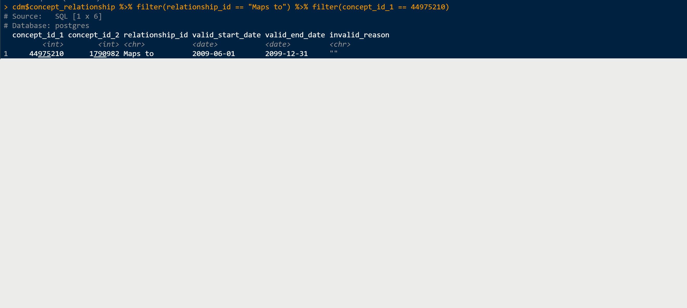

OMOP and CDMConnector
The OMOP Common Data Model
2025-06-23
Introduction: The OMOP Common Data Model
Every time that someone goes to the doctor and something happens the doctors write it into their records.
Each annotation of the doctor is translated into a code, combination of letters and numbers that refers to a condition. There exist several different codding languages: SNOMED, read codes, ICD10, ICD9, RxNorm, ATC, … It depends on the region, language, type of record and others which one is used. This makes that the same condition or drug can be coded in different ways.
A compilation of these records for a group of people is what we call the medical databases. Depending on the origin and purpose of these data there are different groups of databases: electronic health records, claims data, registries… This databases can be structured by several different tables.
The Observational Medical Outcomes Partnership (OMOP) Common Data Model (CDM) is an open community data standard, designed to standardise the structure and content of observational data and to enable efficient analyses that can produce reliable evidence.
Standarisation of the data format

Tables and relation in the OMOP Common Data Model
Mapping a database to the OMOP CDM

Mapping process
Mapping a database to the OMOP CDM

Mapping process
Mapping a database to the OMOP CDM

Mapping process
Standarisation of the vocabularies
From all the vocabularies OMOP CDM uses only a few as Standard: SNOMED for conditions, RxNorm for drugs, …
The process to obtain an standard code from non standard one is called mapping. We can find the mapping in the concept_relationship table.
Each one of the records in clinical data tables (condition_occurrence, drug_exposure, measurement, observation, …) will be coded by two codes:
Source concept: particular to each database, it is the
originalcode.Standard concept: equivalent code from the standard vocabulary.
Example of mapping
In concept relationship we can find different information such as:

Concept relationship
In particular, we have the Maps to and Mapped from relations that can help us to see the mapping between codes.
Example of mapping
Mapping process
Example of mapping
Mapping process
Example of mapping

Mapping process
More details
For more details on how the vocabularies work you can check: Vocabulary course in EHDEN academy
All details about OMOP CDM and more can be found in: the book of ohdsi.

Let’s start coding
These are the packages that we will use in this presentation:
You can click on the specific functions to see ?help and what package they come from:
Create a mock reference
You can create a mock database using omock from one of the 24 available synthetic databases:
[1] "GiBleed" "empty_cdm" "synpuf-1k_5.3"
[4] "synpuf-1k_5.4" "synthea-allergies-10k" "synthea-anemia-10k"
[7] "synthea-breast_cancer-10k" "synthea-contraceptives-10k" "synthea-covid19-10k"
[10] "synthea-covid19-200k" "synthea-dermatitis-10k" "synthea-heart-10k"
[13] "synthea-hiv-10k" "synthea-lung_cancer-10k" "synthea-medications-10k"
[16] "synthea-metabolic_syndrome-10k" "synthea-opioid_addiction-10k" "synthea-rheumatoid_arthritis-10k"
[19] "synthea-snf-10k" "synthea-surgery-10k" "synthea-total_joint_replacement-10k"
[22] "synthea-veteran_prostate_cancer-10k" "synthea-veterans-10k" "synthea-weight_loss-10k" cdm <- mockCdmFromDataset(datasetName = "GiBleed")ℹ Reading GiBleed tables.
ℹ Adding drug_strength table.cdm
── # OMOP CDM reference (local) of GiBleed ─────────────────────────────────────────────────────────────────────────────
• omop tables: care_site, cdm_source, concept_ancestor, concept_class, concept_relationship, concept_synonym, concept,
condition_era, condition_occurrence, cost, death, device_exposure, domain, dose_era, drug_era, drug_exposure,
drug_strength, fact_relationship, location, measurement, metadata, note_nlp, note, observation_period, observation,
payer_plan_period, person, procedure_occurrence, provider, relationship, source_to_concept_map, specimen, visit_detail,
visit_occurrence, vocabulary
• cohort tables: -
• achilles tables: -
• other tables: -
<cdm_reference> object
class(cdm)[1] "cdm_reference"cdmName(cdm)[1] "GiBleed"cdmVersion(cdm)[1] "5.3"cdmSource(cdm)This is a local cdm source
<cdm_reference> object
attributes(cdm)$names
[1] "care_site" "cdm_source" "concept_ancestor" "concept_class"
[5] "concept_relationship" "concept_synonym" "concept" "condition_era"
[9] "condition_occurrence" "cost" "death" "device_exposure"
[13] "domain" "dose_era" "drug_era" "drug_exposure"
[17] "drug_strength" "fact_relationship" "location" "measurement"
[21] "metadata" "note_nlp" "note" "observation_period"
[25] "observation" "payer_plan_period" "person" "procedure_occurrence"
[29] "provider" "relationship" "source_to_concept_map" "specimen"
[33] "visit_detail" "visit_occurrence" "vocabulary"
$cdm_name
[1] "GiBleed"
$cdm_sourceThis is a local cdm source
$cdm_version
[1] "5.3"
$class
[1] "cdm_reference"
<cdm_table> object
cdm$person# A tibble: 2,694 × 18
person_id gender_concept_id year_of_birth month_of_birth day_of_birth birth_datetime race_concept_id
* <int> <int> <int> <int> <int> <dttm> <int>
1 6 8532 1963 12 31 1963-12-31 00:00:00 8516
2 123 8507 1950 4 12 1950-04-12 00:00:00 8527
3 129 8507 1974 10 7 1974-10-07 00:00:00 8527
4 16 8532 1971 10 13 1971-10-13 00:00:00 8527
5 65 8532 1967 3 31 1967-03-31 00:00:00 8516
6 74 8532 1972 1 5 1972-01-05 00:00:00 8527
7 42 8532 1909 11 2 1909-11-02 00:00:00 8527
8 187 8507 1945 7 23 1945-07-23 00:00:00 8527
9 18 8532 1965 11 17 1965-11-17 00:00:00 8527
10 111 8532 1975 5 2 1975-05-02 00:00:00 8527
# ℹ 2,684 more rows
# ℹ 11 more variables: ethnicity_concept_id <int>, location_id <int>, provider_id <int>, care_site_id <int>,
# person_source_value <chr>, gender_source_value <chr>, gender_source_concept_id <int>, race_source_value <chr>,
# race_source_concept_id <int>, ethnicity_source_value <chr>, ethnicity_source_concept_id <int>class(cdm$person)[1] "omop_table" "cdm_table" "tbl_df" "tbl" "data.frame"
<cdm_table> object
cdmReference(cdm$person)── # OMOP CDM reference (local) of GiBleed ─────────────────────────────────────────────────────────────────────────────• omop tables: care_site, cdm_source, concept_ancestor, concept_class, concept_relationship, concept_synonym, concept,
condition_era, condition_occurrence, cost, death, device_exposure, domain, dose_era, drug_era, drug_exposure,
drug_strength, fact_relationship, location, measurement, metadata, note_nlp, note, observation_period, observation,
payer_plan_period, person, procedure_occurrence, provider, relationship, source_to_concept_map, specimen, visit_detail,
visit_occurrence, vocabulary• cohort tables: -• achilles tables: -• other tables: -tableName(cdm$person)[1] "person"tableSource(cdm$person)This is a local cdm source
<cdm_table> object
cdmName(cdm$person)[1] "GiBleed"cdmVersion(cdm$person)[1] "5.3"cdmSource(cdm$person)This is a local cdm source
<cdm_table> object
attributes(cdm$person)$class
[1] "omop_table" "cdm_table" "tbl_df" "tbl" "data.frame"
$row.names
[1] 1 2 3 4 5 6 7 8 9 10 11 12 13 14 15 16 17 18 19 20 21 22
[23] 23 24 25 26 27 28 29 30 31 32 33 34 35 36 37 38 39 40 41 42 43 44
[45] 45 46 47 48 49 50 51 52 53 54 55 56 57 58 59 60 61 62 63 64 65 66
[67] 67 68 69 70 71 72 73 74 75 76 77 78 79 80 81 82 83 84 85 86 87 88
[89] 89 90 91 92 93 94 95 96 97 98 99 100 101 102 103 104 105 106 107 108 109 110
[111] 111 112 113 114 115 116 117 118 119 120 121 122 123 124 125 126 127 128 129 130 131 132
[133] 133 134 135 136 137 138 139 140 141 142 143 144 145 146 147 148 149 150 151 152 153 154
[155] 155 156 157 158 159 160 161 162 163 164 165 166 167 168 169 170 171 172 173 174 175 176
[177] 177 178 179 180 181 182 183 184 185 186 187 188 189 190 191 192 193 194 195 196 197 198
[199] 199 200 201 202 203 204 205 206 207 208 209 210 211 212 213 214 215 216 217 218 219 220
[221] 221 222 223 224 225 226 227 228 229 230 231 232 233 234 235 236 237 238 239 240 241 242
[243] 243 244 245 246 247 248 249 250 251 252 253 254 255 256 257 258 259 260 261 262 263 264
[265] 265 266 267 268 269 270 271 272 273 274 275 276 277 278 279 280 281 282 283 284 285 286
[287] 287 288 289 290 291 292 293 294 295 296 297 298 299 300 301 302 303 304 305 306 307 308
[309] 309 310 311 312 313 314 315 316 317 318 319 320 321 322 323 324 325 326 327 328 329 330
[331] 331 332 333 334 335 336 337 338 339 340 341 342 343 344 345 346 347 348 349 350 351 352
[353] 353 354 355 356 357 358 359 360 361 362 363 364 365 366 367 368 369 370 371 372 373 374
[375] 375 376 377 378 379 380 381 382 383 384 385 386 387 388 389 390 391 392 393 394 395 396
[397] 397 398 399 400 401 402 403 404 405 406 407 408 409 410 411 412 413 414 415 416 417 418
[419] 419 420 421 422 423 424 425 426 427 428 429 430 431 432 433 434 435 436 437 438 439 440
[441] 441 442 443 444 445 446 447 448 449 450 451 452 453 454 455 456 457 458 459 460 461 462
[463] 463 464 465 466 467 468 469 470 471 472 473 474 475 476 477 478 479 480 481 482 483 484
[485] 485 486 487 488 489 490 491 492 493 494 495 496 497 498 499 500 501 502 503 504 505 506
[507] 507 508 509 510 511 512 513 514 515 516 517 518 519 520 521 522 523 524 525 526 527 528
[529] 529 530 531 532 533 534 535 536 537 538 539 540 541 542 543 544 545 546 547 548 549 550
[551] 551 552 553 554 555 556 557 558 559 560 561 562 563 564 565 566 567 568 569 570 571 572
[573] 573 574 575 576 577 578 579 580 581 582 583 584 585 586 587 588 589 590 591 592 593 594
[595] 595 596 597 598 599 600 601 602 603 604 605 606 607 608 609 610 611 612 613 614 615 616
[617] 617 618 619 620 621 622 623 624 625 626 627 628 629 630 631 632 633 634 635 636 637 638
[639] 639 640 641 642 643 644 645 646 647 648 649 650 651 652 653 654 655 656 657 658 659 660
[661] 661 662 663 664 665 666 667 668 669 670 671 672 673 674 675 676 677 678 679 680 681 682
[683] 683 684 685 686 687 688 689 690 691 692 693 694 695 696 697 698 699 700 701 702 703 704
[705] 705 706 707 708 709 710 711 712 713 714 715 716 717 718 719 720 721 722 723 724 725 726
[727] 727 728 729 730 731 732 733 734 735 736 737 738 739 740 741 742 743 744 745 746 747 748
[749] 749 750 751 752 753 754 755 756 757 758 759 760 761 762 763 764 765 766 767 768 769 770
[771] 771 772 773 774 775 776 777 778 779 780 781 782 783 784 785 786 787 788 789 790 791 792
[793] 793 794 795 796 797 798 799 800 801 802 803 804 805 806 807 808 809 810 811 812 813 814
[815] 815 816 817 818 819 820 821 822 823 824 825 826 827 828 829 830 831 832 833 834 835 836
[837] 837 838 839 840 841 842 843 844 845 846 847 848 849 850 851 852 853 854 855 856 857 858
[859] 859 860 861 862 863 864 865 866 867 868 869 870 871 872 873 874 875 876 877 878 879 880
[881] 881 882 883 884 885 886 887 888 889 890 891 892 893 894 895 896 897 898 899 900 901 902
[903] 903 904 905 906 907 908 909 910 911 912 913 914 915 916 917 918 919 920 921 922 923 924
[925] 925 926 927 928 929 930 931 932 933 934 935 936 937 938 939 940 941 942 943 944 945 946
[947] 947 948 949 950 951 952 953 954 955 956 957 958 959 960 961 962 963 964 965 966 967 968
[969] 969 970 971 972 973 974 975 976 977 978 979 980 981 982 983 984 985 986 987 988 989 990
[991] 991 992 993 994 995 996 997 998 999 1000 1001 1002 1003 1004 1005 1006 1007 1008 1009 1010 1011 1012
[1013] 1013 1014 1015 1016 1017 1018 1019 1020 1021 1022 1023 1024 1025 1026 1027 1028 1029 1030 1031 1032 1033 1034
[1035] 1035 1036 1037 1038 1039 1040 1041 1042 1043 1044 1045 1046 1047 1048 1049 1050 1051 1052 1053 1054 1055 1056
[1057] 1057 1058 1059 1060 1061 1062 1063 1064 1065 1066 1067 1068 1069 1070 1071 1072 1073 1074 1075 1076 1077 1078
[1079] 1079 1080 1081 1082 1083 1084 1085 1086 1087 1088 1089 1090 1091 1092 1093 1094 1095 1096 1097 1098 1099 1100
[1101] 1101 1102 1103 1104 1105 1106 1107 1108 1109 1110 1111 1112 1113 1114 1115 1116 1117 1118 1119 1120 1121 1122
[1123] 1123 1124 1125 1126 1127 1128 1129 1130 1131 1132 1133 1134 1135 1136 1137 1138 1139 1140 1141 1142 1143 1144
[1145] 1145 1146 1147 1148 1149 1150 1151 1152 1153 1154 1155 1156 1157 1158 1159 1160 1161 1162 1163 1164 1165 1166
[1167] 1167 1168 1169 1170 1171 1172 1173 1174 1175 1176 1177 1178 1179 1180 1181 1182 1183 1184 1185 1186 1187 1188
[1189] 1189 1190 1191 1192 1193 1194 1195 1196 1197 1198 1199 1200 1201 1202 1203 1204 1205 1206 1207 1208 1209 1210
[1211] 1211 1212 1213 1214 1215 1216 1217 1218 1219 1220 1221 1222 1223 1224 1225 1226 1227 1228 1229 1230 1231 1232
[1233] 1233 1234 1235 1236 1237 1238 1239 1240 1241 1242 1243 1244 1245 1246 1247 1248 1249 1250 1251 1252 1253 1254
[1255] 1255 1256 1257 1258 1259 1260 1261 1262 1263 1264 1265 1266 1267 1268 1269 1270 1271 1272 1273 1274 1275 1276
[1277] 1277 1278 1279 1280 1281 1282 1283 1284 1285 1286 1287 1288 1289 1290 1291 1292 1293 1294 1295 1296 1297 1298
[1299] 1299 1300 1301 1302 1303 1304 1305 1306 1307 1308 1309 1310 1311 1312 1313 1314 1315 1316 1317 1318 1319 1320
[1321] 1321 1322 1323 1324 1325 1326 1327 1328 1329 1330 1331 1332 1333 1334 1335 1336 1337 1338 1339 1340 1341 1342
[1343] 1343 1344 1345 1346 1347 1348 1349 1350 1351 1352 1353 1354 1355 1356 1357 1358 1359 1360 1361 1362 1363 1364
[1365] 1365 1366 1367 1368 1369 1370 1371 1372 1373 1374 1375 1376 1377 1378 1379 1380 1381 1382 1383 1384 1385 1386
[1387] 1387 1388 1389 1390 1391 1392 1393 1394 1395 1396 1397 1398 1399 1400 1401 1402 1403 1404 1405 1406 1407 1408
[1409] 1409 1410 1411 1412 1413 1414 1415 1416 1417 1418 1419 1420 1421 1422 1423 1424 1425 1426 1427 1428 1429 1430
[1431] 1431 1432 1433 1434 1435 1436 1437 1438 1439 1440 1441 1442 1443 1444 1445 1446 1447 1448 1449 1450 1451 1452
[1453] 1453 1454 1455 1456 1457 1458 1459 1460 1461 1462 1463 1464 1465 1466 1467 1468 1469 1470 1471 1472 1473 1474
[1475] 1475 1476 1477 1478 1479 1480 1481 1482 1483 1484 1485 1486 1487 1488 1489 1490 1491 1492 1493 1494 1495 1496
[1497] 1497 1498 1499 1500 1501 1502 1503 1504 1505 1506 1507 1508 1509 1510 1511 1512 1513 1514 1515 1516 1517 1518
[1519] 1519 1520 1521 1522 1523 1524 1525 1526 1527 1528 1529 1530 1531 1532 1533 1534 1535 1536 1537 1538 1539 1540
[1541] 1541 1542 1543 1544 1545 1546 1547 1548 1549 1550 1551 1552 1553 1554 1555 1556 1557 1558 1559 1560 1561 1562
[1563] 1563 1564 1565 1566 1567 1568 1569 1570 1571 1572 1573 1574 1575 1576 1577 1578 1579 1580 1581 1582 1583 1584
[1585] 1585 1586 1587 1588 1589 1590 1591 1592 1593 1594 1595 1596 1597 1598 1599 1600 1601 1602 1603 1604 1605 1606
[1607] 1607 1608 1609 1610 1611 1612 1613 1614 1615 1616 1617 1618 1619 1620 1621 1622 1623 1624 1625 1626 1627 1628
[1629] 1629 1630 1631 1632 1633 1634 1635 1636 1637 1638 1639 1640 1641 1642 1643 1644 1645 1646 1647 1648 1649 1650
[1651] 1651 1652 1653 1654 1655 1656 1657 1658 1659 1660 1661 1662 1663 1664 1665 1666 1667 1668 1669 1670 1671 1672
[1673] 1673 1674 1675 1676 1677 1678 1679 1680 1681 1682 1683 1684 1685 1686 1687 1688 1689 1690 1691 1692 1693 1694
[1695] 1695 1696 1697 1698 1699 1700 1701 1702 1703 1704 1705 1706 1707 1708 1709 1710 1711 1712 1713 1714 1715 1716
[1717] 1717 1718 1719 1720 1721 1722 1723 1724 1725 1726 1727 1728 1729 1730 1731 1732 1733 1734 1735 1736 1737 1738
[1739] 1739 1740 1741 1742 1743 1744 1745 1746 1747 1748 1749 1750 1751 1752 1753 1754 1755 1756 1757 1758 1759 1760
[1761] 1761 1762 1763 1764 1765 1766 1767 1768 1769 1770 1771 1772 1773 1774 1775 1776 1777 1778 1779 1780 1781 1782
[1783] 1783 1784 1785 1786 1787 1788 1789 1790 1791 1792 1793 1794 1795 1796 1797 1798 1799 1800 1801 1802 1803 1804
[1805] 1805 1806 1807 1808 1809 1810 1811 1812 1813 1814 1815 1816 1817 1818 1819 1820 1821 1822 1823 1824 1825 1826
[1827] 1827 1828 1829 1830 1831 1832 1833 1834 1835 1836 1837 1838 1839 1840 1841 1842 1843 1844 1845 1846 1847 1848
[1849] 1849 1850 1851 1852 1853 1854 1855 1856 1857 1858 1859 1860 1861 1862 1863 1864 1865 1866 1867 1868 1869 1870
[1871] 1871 1872 1873 1874 1875 1876 1877 1878 1879 1880 1881 1882 1883 1884 1885 1886 1887 1888 1889 1890 1891 1892
[1893] 1893 1894 1895 1896 1897 1898 1899 1900 1901 1902 1903 1904 1905 1906 1907 1908 1909 1910 1911 1912 1913 1914
[1915] 1915 1916 1917 1918 1919 1920 1921 1922 1923 1924 1925 1926 1927 1928 1929 1930 1931 1932 1933 1934 1935 1936
[1937] 1937 1938 1939 1940 1941 1942 1943 1944 1945 1946 1947 1948 1949 1950 1951 1952 1953 1954 1955 1956 1957 1958
[1959] 1959 1960 1961 1962 1963 1964 1965 1966 1967 1968 1969 1970 1971 1972 1973 1974 1975 1976 1977 1978 1979 1980
[1981] 1981 1982 1983 1984 1985 1986 1987 1988 1989 1990 1991 1992 1993 1994 1995 1996 1997 1998 1999 2000 2001 2002
[2003] 2003 2004 2005 2006 2007 2008 2009 2010 2011 2012 2013 2014 2015 2016 2017 2018 2019 2020 2021 2022 2023 2024
[2025] 2025 2026 2027 2028 2029 2030 2031 2032 2033 2034 2035 2036 2037 2038 2039 2040 2041 2042 2043 2044 2045 2046
[2047] 2047 2048 2049 2050 2051 2052 2053 2054 2055 2056 2057 2058 2059 2060 2061 2062 2063 2064 2065 2066 2067 2068
[2069] 2069 2070 2071 2072 2073 2074 2075 2076 2077 2078 2079 2080 2081 2082 2083 2084 2085 2086 2087 2088 2089 2090
[2091] 2091 2092 2093 2094 2095 2096 2097 2098 2099 2100 2101 2102 2103 2104 2105 2106 2107 2108 2109 2110 2111 2112
[2113] 2113 2114 2115 2116 2117 2118 2119 2120 2121 2122 2123 2124 2125 2126 2127 2128 2129 2130 2131 2132 2133 2134
[2135] 2135 2136 2137 2138 2139 2140 2141 2142 2143 2144 2145 2146 2147 2148 2149 2150 2151 2152 2153 2154 2155 2156
[2157] 2157 2158 2159 2160 2161 2162 2163 2164 2165 2166 2167 2168 2169 2170 2171 2172 2173 2174 2175 2176 2177 2178
[2179] 2179 2180 2181 2182 2183 2184 2185 2186 2187 2188 2189 2190 2191 2192 2193 2194 2195 2196 2197 2198 2199 2200
[2201] 2201 2202 2203 2204 2205 2206 2207 2208 2209 2210 2211 2212 2213 2214 2215 2216 2217 2218 2219 2220 2221 2222
[2223] 2223 2224 2225 2226 2227 2228 2229 2230 2231 2232 2233 2234 2235 2236 2237 2238 2239 2240 2241 2242 2243 2244
[2245] 2245 2246 2247 2248 2249 2250 2251 2252 2253 2254 2255 2256 2257 2258 2259 2260 2261 2262 2263 2264 2265 2266
[2267] 2267 2268 2269 2270 2271 2272 2273 2274 2275 2276 2277 2278 2279 2280 2281 2282 2283 2284 2285 2286 2287 2288
[2289] 2289 2290 2291 2292 2293 2294 2295 2296 2297 2298 2299 2300 2301 2302 2303 2304 2305 2306 2307 2308 2309 2310
[2311] 2311 2312 2313 2314 2315 2316 2317 2318 2319 2320 2321 2322 2323 2324 2325 2326 2327 2328 2329 2330 2331 2332
[2333] 2333 2334 2335 2336 2337 2338 2339 2340 2341 2342 2343 2344 2345 2346 2347 2348 2349 2350 2351 2352 2353 2354
[2355] 2355 2356 2357 2358 2359 2360 2361 2362 2363 2364 2365 2366 2367 2368 2369 2370 2371 2372 2373 2374 2375 2376
[2377] 2377 2378 2379 2380 2381 2382 2383 2384 2385 2386 2387 2388 2389 2390 2391 2392 2393 2394 2395 2396 2397 2398
[2399] 2399 2400 2401 2402 2403 2404 2405 2406 2407 2408 2409 2410 2411 2412 2413 2414 2415 2416 2417 2418 2419 2420
[2421] 2421 2422 2423 2424 2425 2426 2427 2428 2429 2430 2431 2432 2433 2434 2435 2436 2437 2438 2439 2440 2441 2442
[2443] 2443 2444 2445 2446 2447 2448 2449 2450 2451 2452 2453 2454 2455 2456 2457 2458 2459 2460 2461 2462 2463 2464
[2465] 2465 2466 2467 2468 2469 2470 2471 2472 2473 2474 2475 2476 2477 2478 2479 2480 2481 2482 2483 2484 2485 2486
[2487] 2487 2488 2489 2490 2491 2492 2493 2494 2495 2496 2497 2498 2499 2500 2501 2502 2503 2504 2505 2506 2507 2508
[2509] 2509 2510 2511 2512 2513 2514 2515 2516 2517 2518 2519 2520 2521 2522 2523 2524 2525 2526 2527 2528 2529 2530
[2531] 2531 2532 2533 2534 2535 2536 2537 2538 2539 2540 2541 2542 2543 2544 2545 2546 2547 2548 2549 2550 2551 2552
[2553] 2553 2554 2555 2556 2557 2558 2559 2560 2561 2562 2563 2564 2565 2566 2567 2568 2569 2570 2571 2572 2573 2574
[2575] 2575 2576 2577 2578 2579 2580 2581 2582 2583 2584 2585 2586 2587 2588 2589 2590 2591 2592 2593 2594 2595 2596
[2597] 2597 2598 2599 2600 2601 2602 2603 2604 2605 2606 2607 2608 2609 2610 2611 2612 2613 2614 2615 2616 2617 2618
[2619] 2619 2620 2621 2622 2623 2624 2625 2626 2627 2628 2629 2630 2631 2632 2633 2634 2635 2636 2637 2638 2639 2640
[2641] 2641 2642 2643 2644 2645 2646 2647 2648 2649 2650 2651 2652 2653 2654 2655 2656 2657 2658 2659 2660 2661 2662
[2663] 2663 2664 2665 2666 2667 2668 2669 2670 2671 2672 2673 2674 2675 2676 2677 2678 2679 2680 2681 2682 2683 2684
[2685] 2685 2686 2687 2688 2689 2690 2691 2692 2693 2694
$names
[1] "person_id" "gender_concept_id" "year_of_birth"
[4] "month_of_birth" "day_of_birth" "birth_datetime"
[7] "race_concept_id" "ethnicity_concept_id" "location_id"
[10] "provider_id" "care_site_id" "person_source_value"
[13] "gender_source_value" "gender_source_concept_id" "race_source_value"
[16] "race_source_concept_id" "ethnicity_source_value" "ethnicity_source_concept_id"
$tbl_sourceThis is a local cdm source
$tbl_name
[1] "person"
$cdm_reference
── # OMOP CDM reference (local) of GiBleed ─────────────────────────────────────────────────────────────────────────────
• omop tables: care_site, cdm_source, concept_ancestor, concept_class, concept_relationship, concept_synonym, concept,
condition_era, condition_occurrence, cost, death, device_exposure, domain, dose_era, drug_era, drug_exposure,
drug_strength, fact_relationship, location, measurement, metadata, note_nlp, note, observation_period, observation,
payer_plan_period, person, procedure_occurrence, provider, relationship, source_to_concept_map, specimen, visit_detail,
visit_occurrence, vocabulary
• cohort tables: -
• achilles tables: -
• other tables: -Connecting to a database from R (the DBI package)
In general the OMOP datasets that we will use won’t be locally, and they will on a database.
Database connections from R can be made using the DBI package.
Connecting to a database from R (the DBI package)
Connect to Sql server:
In this CDMConnector article you can see how to connect to the different supported DBMS.
Databases organisation
Databases are organised by schemas (blueprint or plan that defines how the data will be organised and structured within the database).
In general, OMOP databases have two schemas:
cdm schema: it contains all the tables of the cdm. Usually we only will have reading permission for this schema.write schema: it is a place where we can store tables (like cohorts). We need writing permissions to this schema.
Create a local database
duckdb is a package that allows us to create local databases.
# name of the dataset
datasetName <- "GiBleed"
# name of the database file
dbdir <- here(paste0(datasetName, ".duckdb"))
# create empty database
con <- dbConnect(drv = duckdb(dbdir = dbdir))
# create local reference
cdm <- mockCdmFromDataset(datasetName = datasetName)
# copy local reference to connection
insertCdmTo(cdm = cdm, to = dbSource(con = con, writeSchema = "main"))
# disconnect
dbDisconnect(conn = con)Let’s create our first cdm reference
# connect to the database
dbdir <- here("GiBleed.duckdb")
con <- dbConnect(drv = duckdb(dbdir = dbdir))
cdm <- cdmFromCon(con = con, cdmSchema = "main", writeSchema = "main")
cdm── # OMOP CDM reference (duckdb) of Synthea ────────────────────────────────────────────────────────────────────────────• omop tables: person, observation_period, visit_occurrence, visit_detail, condition_occurrence, drug_exposure,
procedure_occurrence, device_exposure, measurement, observation, death, note, note_nlp, specimen, fact_relationship,
location, care_site, provider, payer_plan_period, cost, drug_era, dose_era, condition_era, metadata, cdm_source,
concept, vocabulary, domain, concept_class, concept_relationship, relationship, concept_synonym, concept_ancestor,
source_to_concept_map, drug_strength• cohort tables: -• achilles tables: -• other tables: -Access to tables of the cdm reference
cdm$person# Source: table<person> [?? x 18]
# Database: DuckDB v1.3.0 [unknown@Linux 6.11.0-1015-azure:R 4.5.1//home/runner/work/RealWorldEvidenceSummerSchool2025/RealWorldEvidenceSummerSchool2025/GiBleed.duckdb]
person_id gender_concept_id year_of_birth month_of_birth day_of_birth birth_datetime race_concept_id
<int> <int> <int> <int> <int> <dttm> <int>
1 6 8532 1963 12 31 1963-12-31 00:00:00 8516
2 123 8507 1950 4 12 1950-04-12 00:00:00 8527
3 129 8507 1974 10 7 1974-10-07 00:00:00 8527
4 16 8532 1971 10 13 1971-10-13 00:00:00 8527
5 65 8532 1967 3 31 1967-03-31 00:00:00 8516
6 74 8532 1972 1 5 1972-01-05 00:00:00 8527
7 42 8532 1909 11 2 1909-11-02 00:00:00 8527
8 187 8507 1945 7 23 1945-07-23 00:00:00 8527
9 18 8532 1965 11 17 1965-11-17 00:00:00 8527
10 111 8532 1975 5 2 1975-05-02 00:00:00 8527
# ℹ more rows
# ℹ 11 more variables: ethnicity_concept_id <int>, location_id <int>, provider_id <int>, care_site_id <int>,
# person_source_value <chr>, gender_source_value <chr>, gender_source_concept_id <int>, race_source_value <chr>,
# race_source_concept_id <int>, ethnicity_source_value <chr>, ethnicity_source_concept_id <int>Read tables in GiBleed
Once we read a table we can operate with it and for example count the number of rows of person table.
cdm$person |>
count()# Source: SQL [?? x 1]
# Database: DuckDB v1.3.0 [unknown@Linux 6.11.0-1015-azure:R 4.5.1//home/runner/work/RealWorldEvidenceSummerSchool2025/RealWorldEvidenceSummerSchool2025/GiBleed.duckdb]
n
<dbl>
1 2694Operation with tidyverse
If you are familiarised with tidyverse you can use any of the usual dplyr commands in you database tables.
cdm$drug_exposure |>
group_by(drug_concept_id) |>
summarise(number_persons = n_distinct(person_id)) |>
collect() |>
arrange(desc(number_persons))# A tibble: 113 × 2
drug_concept_id number_persons
<int> <dbl>
1 40213227 2660
2 1127433 2580
3 40213160 2140
4 1713671 2021
5 19059056 1927
6 1118084 1844
7 40213296 1737
8 40213306 1560
9 1127078 1428
10 40229134 1393
# ℹ 103 more rowsDatabase name
When we have a cdm object we can check which is the name of that database using:
cdmName(cdm)[1] "Synthea"In some cases we want to give a database a name that we want, this can be done at the connection stage:
cdm <- cdmFromCon(
con = con, cdmSchema = "main", writeSchema = "main", cdmName = "GiBleed"
)cdmName(cdm)[1] "GiBleed"Create a new table
Let’s say I want to subset the condition_occurrence table to a certain rows and certain columns and save it so I can later access it.
temporary table (default):
cdm$my_saved_table <- cdm$condition_occurrence |>
filter(condition_concept_id == 4112343) |>
select(person_id, condition_start_date) |>
compute()
listSourceTables(cdm) [1] "care_site" "cdm_source"
[3] "concept" "concept_ancestor"
[5] "concept_class" "concept_relationship"
[7] "concept_synonym" "condition_era"
[9] "condition_occurrence" "cost"
[11] "death" "device_exposure"
[13] "domain" "dose_era"
[15] "drug_era" "drug_exposure"
[17] "drug_strength" "fact_relationship"
[19] "location" "measurement"
[21] "metadata" "my_study_age_cohort"
[23] "my_study_age_cohort_attrition" "my_study_age_cohort_codelist"
[25] "my_study_age_cohort_set" "my_study_aspirin"
[27] "my_study_aspirin_attrition" "my_study_aspirin_codelist"
[29] "my_study_aspirin_last" "my_study_aspirin_last_attrition"
[31] "my_study_aspirin_last_codelist" "my_study_aspirin_last_set"
[33] "my_study_aspirin_set" "my_study_diclofenac"
[35] "my_study_diclofenac_attrition" "my_study_diclofenac_codelist"
[37] "my_study_diclofenac_set" "my_study_ibuprofen"
[39] "my_study_ibuprofen_attrition" "my_study_ibuprofen_codelist"
[41] "my_study_ibuprofen_death" "my_study_ibuprofen_death_attrition"
[43] "my_study_ibuprofen_death_codelist" "my_study_ibuprofen_death_set"
[45] "my_study_ibuprofen_set" "my_study_ibuprofen_years"
[47] "my_study_ibuprofen_years_attrition" "my_study_ibuprofen_years_codelist"
[49] "my_study_ibuprofen_years_set" "my_study_intersection"
[51] "my_study_intersection_attrition" "my_study_intersection_codelist"
[53] "my_study_intersection_set" "my_study_medications"
[55] "my_study_medications_attrition" "my_study_medications_codelist"
[57] "my_study_medications_collapsed" "my_study_medications_collapsed_attrition"
[59] "my_study_medications_collapsed_codelist" "my_study_medications_collapsed_set"
[61] "my_study_medications_requirement" "my_study_medications_requirement_attrition"
[63] "my_study_medications_requirement_codelist" "my_study_medications_requirement_set"
[65] "my_study_medications_set" "my_study_medications_trimmed"
[67] "my_study_medications_trimmed_attrition" "my_study_medications_trimmed_codelist"
[69] "my_study_medications_trimmed_set" "note"
[71] "note_nlp" "observation"
[73] "observation_period" "payer_plan_period"
[75] "person" "procedure_occurrence"
[77] "provider" "relationship"
[79] "source_to_concept_map" "specimen"
[81] "test_conditions" "test_conditions_attrition"
[83] "test_conditions_codelist" "test_conditions_set"
[85] "test_medications" "test_medications_attrition"
[87] "test_medications_codelist" "test_medications_set"
[89] "test_new_sinusitis" "test_new_sinusitis_attrition"
[91] "test_new_sinusitis_codelist" "test_new_sinusitis_set"
[93] "test_sinusitis" "test_sinusitis_attrition"
[95] "test_sinusitis_codelist" "test_sinusitis_set"
[97] "visit_detail" "visit_occurrence"
[99] "vocabulary" "og_001_1750678217" Create a new table
permanent table:
cdm$my_saved_table <- cdm$condition_occurrence |>
filter(condition_concept_id == 4112343) |>
select(person_id, condition_start_date) |>
compute(name = "my_saved_table")
listSourceTables(cdm) [1] "care_site" "cdm_source"
[3] "concept" "concept_ancestor"
[5] "concept_class" "concept_relationship"
[7] "concept_synonym" "condition_era"
[9] "condition_occurrence" "cost"
[11] "death" "device_exposure"
[13] "domain" "dose_era"
[15] "drug_era" "drug_exposure"
[17] "drug_strength" "fact_relationship"
[19] "location" "measurement"
[21] "metadata" "my_saved_table"
[23] "my_study_age_cohort" "my_study_age_cohort_attrition"
[25] "my_study_age_cohort_codelist" "my_study_age_cohort_set"
[27] "my_study_aspirin" "my_study_aspirin_attrition"
[29] "my_study_aspirin_codelist" "my_study_aspirin_last"
[31] "my_study_aspirin_last_attrition" "my_study_aspirin_last_codelist"
[33] "my_study_aspirin_last_set" "my_study_aspirin_set"
[35] "my_study_diclofenac" "my_study_diclofenac_attrition"
[37] "my_study_diclofenac_codelist" "my_study_diclofenac_set"
[39] "my_study_ibuprofen" "my_study_ibuprofen_attrition"
[41] "my_study_ibuprofen_codelist" "my_study_ibuprofen_death"
[43] "my_study_ibuprofen_death_attrition" "my_study_ibuprofen_death_codelist"
[45] "my_study_ibuprofen_death_set" "my_study_ibuprofen_set"
[47] "my_study_ibuprofen_years" "my_study_ibuprofen_years_attrition"
[49] "my_study_ibuprofen_years_codelist" "my_study_ibuprofen_years_set"
[51] "my_study_intersection" "my_study_intersection_attrition"
[53] "my_study_intersection_codelist" "my_study_intersection_set"
[55] "my_study_medications" "my_study_medications_attrition"
[57] "my_study_medications_codelist" "my_study_medications_collapsed"
[59] "my_study_medications_collapsed_attrition" "my_study_medications_collapsed_codelist"
[61] "my_study_medications_collapsed_set" "my_study_medications_requirement"
[63] "my_study_medications_requirement_attrition" "my_study_medications_requirement_codelist"
[65] "my_study_medications_requirement_set" "my_study_medications_set"
[67] "my_study_medications_trimmed" "my_study_medications_trimmed_attrition"
[69] "my_study_medications_trimmed_codelist" "my_study_medications_trimmed_set"
[71] "note" "note_nlp"
[73] "observation" "observation_period"
[75] "payer_plan_period" "person"
[77] "procedure_occurrence" "provider"
[79] "relationship" "source_to_concept_map"
[81] "specimen" "test_conditions"
[83] "test_conditions_attrition" "test_conditions_codelist"
[85] "test_conditions_set" "test_medications"
[87] "test_medications_attrition" "test_medications_codelist"
[89] "test_medications_set" "test_new_sinusitis"
[91] "test_new_sinusitis_attrition" "test_new_sinusitis_codelist"
[93] "test_new_sinusitis_set" "test_sinusitis"
[95] "test_sinusitis_attrition" "test_sinusitis_codelist"
[97] "test_sinusitis_set" "visit_detail"
[99] "visit_occurrence" "vocabulary"
[101] "og_001_1750678217" Create a new table
cdm── # OMOP CDM reference (duckdb) of GiBleed ────────────────────────────────────────────────────────────────────────────• omop tables: person, observation_period, visit_occurrence, visit_detail, condition_occurrence, drug_exposure,
procedure_occurrence, device_exposure, measurement, observation, death, note, note_nlp, specimen, fact_relationship,
location, care_site, provider, payer_plan_period, cost, drug_era, dose_era, condition_era, metadata, cdm_source,
concept, vocabulary, domain, concept_class, concept_relationship, relationship, concept_synonym, concept_ancestor,
source_to_concept_map, drug_strength• cohort tables: -• achilles tables: -• other tables: my_saved_tablecdm$my_saved_table# Source: table<my_saved_table> [?? x 2]
# Database: DuckDB v1.3.0 [unknown@Linux 6.11.0-1015-azure:R 4.5.1//home/runner/work/RealWorldEvidenceSummerSchool2025/RealWorldEvidenceSummerSchool2025/GiBleed.duckdb]
person_id condition_start_date
<int> <date>
1 263 2015-10-02
2 439 1990-03-20
3 449 1999-12-12
4 515 1961-11-14
5 17 1963-12-02
6 30 1993-03-19
7 90 1970-01-15
8 116 1959-06-11
9 137 2005-11-15
10 176 1986-10-08
# ℹ more rowsDrop an existing table
To drop an existing table:
Eliminate the table from the cdm object.
Eliminate the table from the database.
cdm <- dropSourceTable(cdm = cdm, name = "my_saved_table")
cdm── # OMOP CDM reference (duckdb) of GiBleed ────────────────────────────────────────────────────────────────────────────• omop tables: person, observation_period, visit_occurrence, visit_detail, condition_occurrence, drug_exposure,
procedure_occurrence, device_exposure, measurement, observation, death, note, note_nlp, specimen, fact_relationship,
location, care_site, provider, payer_plan_period, cost, drug_era, dose_era, condition_era, metadata, cdm_source,
concept, vocabulary, domain, concept_class, concept_relationship, relationship, concept_synonym, concept_ancestor,
source_to_concept_map, drug_strength• cohort tables: -• achilles tables: -• other tables: -Drop an existing table
listSourceTables(cdm) [1] "care_site" "cdm_source"
[3] "concept" "concept_ancestor"
[5] "concept_class" "concept_relationship"
[7] "concept_synonym" "condition_era"
[9] "condition_occurrence" "cost"
[11] "death" "device_exposure"
[13] "domain" "dose_era"
[15] "drug_era" "drug_exposure"
[17] "drug_strength" "fact_relationship"
[19] "location" "measurement"
[21] "metadata" "my_study_age_cohort"
[23] "my_study_age_cohort_attrition" "my_study_age_cohort_codelist"
[25] "my_study_age_cohort_set" "my_study_aspirin"
[27] "my_study_aspirin_attrition" "my_study_aspirin_codelist"
[29] "my_study_aspirin_last" "my_study_aspirin_last_attrition"
[31] "my_study_aspirin_last_codelist" "my_study_aspirin_last_set"
[33] "my_study_aspirin_set" "my_study_diclofenac"
[35] "my_study_diclofenac_attrition" "my_study_diclofenac_codelist"
[37] "my_study_diclofenac_set" "my_study_ibuprofen"
[39] "my_study_ibuprofen_attrition" "my_study_ibuprofen_codelist"
[41] "my_study_ibuprofen_death" "my_study_ibuprofen_death_attrition"
[43] "my_study_ibuprofen_death_codelist" "my_study_ibuprofen_death_set"
[45] "my_study_ibuprofen_set" "my_study_ibuprofen_years"
[47] "my_study_ibuprofen_years_attrition" "my_study_ibuprofen_years_codelist"
[49] "my_study_ibuprofen_years_set" "my_study_intersection"
[51] "my_study_intersection_attrition" "my_study_intersection_codelist"
[53] "my_study_intersection_set" "my_study_medications"
[55] "my_study_medications_attrition" "my_study_medications_codelist"
[57] "my_study_medications_collapsed" "my_study_medications_collapsed_attrition"
[59] "my_study_medications_collapsed_codelist" "my_study_medications_collapsed_set"
[61] "my_study_medications_requirement" "my_study_medications_requirement_attrition"
[63] "my_study_medications_requirement_codelist" "my_study_medications_requirement_set"
[65] "my_study_medications_set" "my_study_medications_trimmed"
[67] "my_study_medications_trimmed_attrition" "my_study_medications_trimmed_codelist"
[69] "my_study_medications_trimmed_set" "note"
[71] "note_nlp" "observation"
[73] "observation_period" "payer_plan_period"
[75] "person" "procedure_occurrence"
[77] "provider" "relationship"
[79] "source_to_concept_map" "specimen"
[81] "test_conditions" "test_conditions_attrition"
[83] "test_conditions_codelist" "test_conditions_set"
[85] "test_medications" "test_medications_attrition"
[87] "test_medications_codelist" "test_medications_set"
[89] "test_new_sinusitis" "test_new_sinusitis_attrition"
[91] "test_new_sinusitis_codelist" "test_new_sinusitis_set"
[93] "test_sinusitis" "test_sinusitis_attrition"
[95] "test_sinusitis_codelist" "test_sinusitis_set"
[97] "visit_detail" "visit_occurrence"
[99] "vocabulary" "og_001_1750678217" Drop an existing table
Let’s drop also the other table that we created:
cdm <- dropSourceTable(cdm = cdm, name = starts_with("og_"))
cdm── # OMOP CDM reference (duckdb) of GiBleed ────────────────────────────────────────────────────────────────────────────• omop tables: person, observation_period, visit_occurrence, visit_detail, condition_occurrence, drug_exposure,
procedure_occurrence, device_exposure, measurement, observation, death, note, note_nlp, specimen, fact_relationship,
location, care_site, provider, payer_plan_period, cost, drug_era, dose_era, condition_era, metadata, cdm_source,
concept, vocabulary, domain, concept_class, concept_relationship, relationship, concept_synonym, concept_ancestor,
source_to_concept_map, drug_strength• cohort tables: -• achilles tables: -• other tables: -Drop an existing table
listSourceTables(cdm) [1] "care_site" "cdm_source"
[3] "concept" "concept_ancestor"
[5] "concept_class" "concept_relationship"
[7] "concept_synonym" "condition_era"
[9] "condition_occurrence" "cost"
[11] "death" "device_exposure"
[13] "domain" "dose_era"
[15] "drug_era" "drug_exposure"
[17] "drug_strength" "fact_relationship"
[19] "location" "measurement"
[21] "metadata" "my_study_age_cohort"
[23] "my_study_age_cohort_attrition" "my_study_age_cohort_codelist"
[25] "my_study_age_cohort_set" "my_study_aspirin"
[27] "my_study_aspirin_attrition" "my_study_aspirin_codelist"
[29] "my_study_aspirin_last" "my_study_aspirin_last_attrition"
[31] "my_study_aspirin_last_codelist" "my_study_aspirin_last_set"
[33] "my_study_aspirin_set" "my_study_diclofenac"
[35] "my_study_diclofenac_attrition" "my_study_diclofenac_codelist"
[37] "my_study_diclofenac_set" "my_study_ibuprofen"
[39] "my_study_ibuprofen_attrition" "my_study_ibuprofen_codelist"
[41] "my_study_ibuprofen_death" "my_study_ibuprofen_death_attrition"
[43] "my_study_ibuprofen_death_codelist" "my_study_ibuprofen_death_set"
[45] "my_study_ibuprofen_set" "my_study_ibuprofen_years"
[47] "my_study_ibuprofen_years_attrition" "my_study_ibuprofen_years_codelist"
[49] "my_study_ibuprofen_years_set" "my_study_intersection"
[51] "my_study_intersection_attrition" "my_study_intersection_codelist"
[53] "my_study_intersection_set" "my_study_medications"
[55] "my_study_medications_attrition" "my_study_medications_codelist"
[57] "my_study_medications_collapsed" "my_study_medications_collapsed_attrition"
[59] "my_study_medications_collapsed_codelist" "my_study_medications_collapsed_set"
[61] "my_study_medications_requirement" "my_study_medications_requirement_attrition"
[63] "my_study_medications_requirement_codelist" "my_study_medications_requirement_set"
[65] "my_study_medications_set" "my_study_medications_trimmed"
[67] "my_study_medications_trimmed_attrition" "my_study_medications_trimmed_codelist"
[69] "my_study_medications_trimmed_set" "note"
[71] "note_nlp" "observation"
[73] "observation_period" "payer_plan_period"
[75] "person" "procedure_occurrence"
[77] "provider" "relationship"
[79] "source_to_concept_map" "specimen"
[81] "test_conditions" "test_conditions_attrition"
[83] "test_conditions_codelist" "test_conditions_set"
[85] "test_medications" "test_medications_attrition"
[87] "test_medications_codelist" "test_medications_set"
[89] "test_new_sinusitis" "test_new_sinusitis_attrition"
[91] "test_new_sinusitis_codelist" "test_new_sinusitis_set"
[93] "test_sinusitis" "test_sinusitis_attrition"
[95] "test_sinusitis_codelist" "test_sinusitis_set"
[97] "visit_detail" "visit_occurrence"
[99] "vocabulary" Insert a table
Let’s say we have a local tibble and we want to insert it in the cdm:
cdm <- insertTable(cdm = cdm, name = "my_test_table", table = cars)
cdm── # OMOP CDM reference (duckdb) of GiBleed ────────────────────────────────────────────────────────────────────────────• omop tables: person, observation_period, visit_occurrence, visit_detail, condition_occurrence, drug_exposure,
procedure_occurrence, device_exposure, measurement, observation, death, note, note_nlp, specimen, fact_relationship,
location, care_site, provider, payer_plan_period, cost, drug_era, dose_era, condition_era, metadata, cdm_source,
concept, vocabulary, domain, concept_class, concept_relationship, relationship, concept_synonym, concept_ancestor,
source_to_concept_map, drug_strength• cohort tables: -• achilles tables: -• other tables: my_test_tableInsert a table
listSourceTables(cdm) [1] "care_site" "cdm_source"
[3] "concept" "concept_ancestor"
[5] "concept_class" "concept_relationship"
[7] "concept_synonym" "condition_era"
[9] "condition_occurrence" "cost"
[11] "death" "device_exposure"
[13] "domain" "dose_era"
[15] "drug_era" "drug_exposure"
[17] "drug_strength" "fact_relationship"
[19] "location" "measurement"
[21] "metadata" "my_study_age_cohort"
[23] "my_study_age_cohort_attrition" "my_study_age_cohort_codelist"
[25] "my_study_age_cohort_set" "my_study_aspirin"
[27] "my_study_aspirin_attrition" "my_study_aspirin_codelist"
[29] "my_study_aspirin_last" "my_study_aspirin_last_attrition"
[31] "my_study_aspirin_last_codelist" "my_study_aspirin_last_set"
[33] "my_study_aspirin_set" "my_study_diclofenac"
[35] "my_study_diclofenac_attrition" "my_study_diclofenac_codelist"
[37] "my_study_diclofenac_set" "my_study_ibuprofen"
[39] "my_study_ibuprofen_attrition" "my_study_ibuprofen_codelist"
[41] "my_study_ibuprofen_death" "my_study_ibuprofen_death_attrition"
[43] "my_study_ibuprofen_death_codelist" "my_study_ibuprofen_death_set"
[45] "my_study_ibuprofen_set" "my_study_ibuprofen_years"
[47] "my_study_ibuprofen_years_attrition" "my_study_ibuprofen_years_codelist"
[49] "my_study_ibuprofen_years_set" "my_study_intersection"
[51] "my_study_intersection_attrition" "my_study_intersection_codelist"
[53] "my_study_intersection_set" "my_study_medications"
[55] "my_study_medications_attrition" "my_study_medications_codelist"
[57] "my_study_medications_collapsed" "my_study_medications_collapsed_attrition"
[59] "my_study_medications_collapsed_codelist" "my_study_medications_collapsed_set"
[61] "my_study_medications_requirement" "my_study_medications_requirement_attrition"
[63] "my_study_medications_requirement_codelist" "my_study_medications_requirement_set"
[65] "my_study_medications_set" "my_study_medications_trimmed"
[67] "my_study_medications_trimmed_attrition" "my_study_medications_trimmed_codelist"
[69] "my_study_medications_trimmed_set" "my_test_table"
[71] "note" "note_nlp"
[73] "observation" "observation_period"
[75] "payer_plan_period" "person"
[77] "procedure_occurrence" "provider"
[79] "relationship" "source_to_concept_map"
[81] "specimen" "test_conditions"
[83] "test_conditions_attrition" "test_conditions_codelist"
[85] "test_conditions_set" "test_medications"
[87] "test_medications_attrition" "test_medications_codelist"
[89] "test_medications_set" "test_new_sinusitis"
[91] "test_new_sinusitis_attrition" "test_new_sinusitis_codelist"
[93] "test_new_sinusitis_set" "test_sinusitis"
[95] "test_sinusitis_attrition" "test_sinusitis_codelist"
[97] "test_sinusitis_set" "visit_detail"
[99] "visit_occurrence" "vocabulary" cdm$my_test_table# Source: table<my_test_table> [?? x 2]
# Database: DuckDB v1.3.0 [unknown@Linux 6.11.0-1015-azure:R 4.5.1//home/runner/work/RealWorldEvidenceSummerSchool2025/RealWorldEvidenceSummerSchool2025/GiBleed.duckdb]
speed dist
<dbl> <dbl>
1 4 2
2 4 10
3 7 4
4 7 22
5 8 16
6 9 10
7 10 18
8 10 26
9 10 34
10 11 17
# ℹ more rowsUse a prefix
It is VERY IMPORTANT that when we create the cdm object we use a prefix:
cdm <- cdmFromCon(
con = con,
cdmSchema = "main",
writeSchema = "main",
writePrefix = "my_prefix_"
)
cdm── # OMOP CDM reference (duckdb) of Synthea ────────────────────────────────────────────────────────────────────────────• omop tables: person, observation_period, visit_occurrence, visit_detail, condition_occurrence, drug_exposure,
procedure_occurrence, device_exposure, measurement, observation, death, note, note_nlp, specimen, fact_relationship,
location, care_site, provider, payer_plan_period, cost, drug_era, dose_era, condition_era, metadata, cdm_source,
concept, vocabulary, domain, concept_class, concept_relationship, relationship, concept_synonym, concept_ancestor,
source_to_concept_map, drug_strength• cohort tables: -• achilles tables: -• other tables: -Use a prefix
Now when we create a new table the prefix will be automatically added:
cdm <- insertTable(cdm = cdm, name = "my_test_table", table = cars)
cdm── # OMOP CDM reference (duckdb) of Synthea ────────────────────────────────────────────────────────────────────────────• omop tables: person, observation_period, visit_occurrence, visit_detail, condition_occurrence, drug_exposure,
procedure_occurrence, device_exposure, measurement, observation, death, note, note_nlp, specimen, fact_relationship,
location, care_site, provider, payer_plan_period, cost, drug_era, dose_era, condition_era, metadata, cdm_source,
concept, vocabulary, domain, concept_class, concept_relationship, relationship, concept_synonym, concept_ancestor,
source_to_concept_map, drug_strength• cohort tables: -• achilles tables: -• other tables: my_test_tableUse a prefix
listSourceTables(cdm = cdm)[1] "my_test_table"cdm$my_test_table# Source: table<my_prefix_my_test_table> [?? x 2]
# Database: DuckDB v1.3.0 [unknown@Linux 6.11.0-1015-azure:R 4.5.1//home/runner/work/RealWorldEvidenceSummerSchool2025/RealWorldEvidenceSummerSchool2025/GiBleed.duckdb]
speed dist
<dbl> <dbl>
1 4 2
2 4 10
3 7 4
4 7 22
5 8 16
6 9 10
7 10 18
8 10 26
9 10 34
10 11 17
# ℹ more rowsUse a prefix
DO NOT use the prefix to drop tables, you only care about the prefix at the connection stage!
cdm <- dropSourceTable(cdm = cdm, name = "my_prefix_my_test_table")
listSourceTables(cdm = cdm)[1] "my_test_table"Use a prefix
cdm── # OMOP CDM reference (duckdb) of Synthea ────────────────────────────────────────────────────────────────────────────• omop tables: person, observation_period, visit_occurrence, visit_detail, condition_occurrence, drug_exposure,
procedure_occurrence, device_exposure, measurement, observation, death, note, note_nlp, specimen, fact_relationship,
location, care_site, provider, payer_plan_period, cost, drug_era, dose_era, condition_era, metadata, cdm_source,
concept, vocabulary, domain, concept_class, concept_relationship, relationship, concept_synonym, concept_ancestor,
source_to_concept_map, drug_strength• cohort tables: -• achilles tables: -• other tables: my_test_tableUse a prefix
DO NOT use the prefix to drop tables, you only care about the prefix at the connection stage!
cdm <- dropSourceTable(cdm = cdm, name = "my_test_table")
listSourceTables(cdm = cdm)character(0)Use a prefix
cdm── # OMOP CDM reference (duckdb) of Synthea ────────────────────────────────────────────────────────────────────────────• omop tables: person, observation_period, visit_occurrence, visit_detail, condition_occurrence, drug_exposure,
procedure_occurrence, device_exposure, measurement, observation, death, note, note_nlp, specimen, fact_relationship,
location, care_site, provider, payer_plan_period, cost, drug_era, dose_era, condition_era, metadata, cdm_source,
concept, vocabulary, domain, concept_class, concept_relationship, relationship, concept_synonym, concept_ancestor,
source_to_concept_map, drug_strength• cohort tables: -• achilles tables: -• other tables: -Consistency rules
We use compute() to compute the result into a temporary (temporary = TRUE) or permanent (temporary = FALSE) table.
If it is a temporary table we can assign assign it to where I want for example:
cdm$my_custom_name <- cdm$person |>
compute()If it is a permanent table we can only assign it to the same name:
error:
cdm$my_custom_name <- cdm$person |>
compute(name = "not_my_custom_name")Error in `[[<-`:
! You can't assign a table named not_my_custom_name to my_custom_name. Please use compute to change table name.no error:
cdm$my_custom_name <- cdm$person |>
compute(name = "my_custom_name")Consistency rules
Omop names are reserved words, e.g. we can not assign a table that is not the person table to cdm$person.
cdm$person <- cdm$drug_exposure |>
compute(name = "person", temporary = FALSE)Error in `newOmopTable()`:
! gender_concept_id, year_of_birth, race_concept_id and ethnicity_concept_id are not present in table personResult model
The output of our analyses has been standardised to the <summarised_result> object.
x <- mockSummarisedResult()
x# A tibble: 126 × 13
result_id cdm_name group_name group_level strata_name strata_level variable_name variable_level estimate_name
<int> <chr> <chr> <chr> <chr> <chr> <chr> <chr> <chr>
1 1 mock cohort_name cohort1 overall overall number subje… <NA> count
2 1 mock cohort_name cohort1 age_group &&& sex <40 &&& Male number subje… <NA> count
3 1 mock cohort_name cohort1 age_group &&& sex >=40 &&& Male number subje… <NA> count
4 1 mock cohort_name cohort1 age_group &&& sex <40 &&& Fema… number subje… <NA> count
5 1 mock cohort_name cohort1 age_group &&& sex >=40 &&& Fem… number subje… <NA> count
6 1 mock cohort_name cohort1 sex Male number subje… <NA> count
7 1 mock cohort_name cohort1 sex Female number subje… <NA> count
8 1 mock cohort_name cohort1 age_group <40 number subje… <NA> count
9 1 mock cohort_name cohort1 age_group >=40 number subje… <NA> count
10 1 mock cohort_name cohort2 overall overall number subje… <NA> count
# ℹ 116 more rows
# ℹ 4 more variables: estimate_type <chr>, estimate_value <chr>, additional_name <chr>, additional_level <chr>class(x)[1] "summarised_result" "omop_result" "tbl_df" "tbl" "data.frame" <summarised_result>
The summarised result object contains 13 columns:
glimpse(x)Rows: 126
Columns: 13
$ result_id <int> 1, 1, 1, 1, 1, 1, 1, 1, 1, 1, 1, 1, 1, 1, 1, 1, 1, 1, 1, 1, 1, 1, 1, 1, 1, 1, 1, 1, 1, 1, 1, …
$ cdm_name <chr> "mock", "mock", "mock", "mock", "mock", "mock", "mock", "mock", "mock", "mock", "mock", "mock…
$ group_name <chr> "cohort_name", "cohort_name", "cohort_name", "cohort_name", "cohort_name", "cohort_name", "co…
$ group_level <chr> "cohort1", "cohort1", "cohort1", "cohort1", "cohort1", "cohort1", "cohort1", "cohort1", "coho…
$ strata_name <chr> "overall", "age_group &&& sex", "age_group &&& sex", "age_group &&& sex", "age_group &&& sex"…
$ strata_level <chr> "overall", "<40 &&& Male", ">=40 &&& Male", "<40 &&& Female", ">=40 &&& Female", "Male", "Fem…
$ variable_name <chr> "number subjects", "number subjects", "number subjects", "number subjects", "number subjects"…
$ variable_level <chr> NA, NA, NA, NA, NA, NA, NA, NA, NA, NA, NA, NA, NA, NA, NA, NA, NA, NA, NA, NA, NA, NA, NA, N…
$ estimate_name <chr> "count", "count", "count", "count", "count", "count", "count", "count", "count", "count", "co…
$ estimate_type <chr> "integer", "integer", "integer", "integer", "integer", "integer", "integer", "integer", "inte…
$ estimate_value <chr> "2655087", "3721239", "5728534", "9082078", "2016819", "8983897", "9446753", "6607978", "6291…
$ additional_name <chr> "overall", "overall", "overall", "overall", "overall", "overall", "overall", "overall", "over…
$ additional_level <chr> "overall", "overall", "overall", "overall", "overall", "overall", "overall", "overall", "over…<summarised_result>
And have some associated settings
settings(x)# A tibble: 1 × 8
result_id result_type package_name package_version group strata additional min_cell_count
<int> <chr> <chr> <chr> <chr> <chr> <chr> <chr>
1 1 mock_summarised_result visOmopResults 1.1.1 cohort_name age_group &&& s… "" 0 tidy the result object
x |>
splitGroup() |>
glimpse()Rows: 126
Columns: 12
$ result_id <int> 1, 1, 1, 1, 1, 1, 1, 1, 1, 1, 1, 1, 1, 1, 1, 1, 1, 1, 1, 1, 1, 1, 1, 1, 1, 1, 1, 1, 1, 1, 1, …
$ cdm_name <chr> "mock", "mock", "mock", "mock", "mock", "mock", "mock", "mock", "mock", "mock", "mock", "mock…
$ cohort_name <chr> "cohort1", "cohort1", "cohort1", "cohort1", "cohort1", "cohort1", "cohort1", "cohort1", "coho…
$ strata_name <chr> "overall", "age_group &&& sex", "age_group &&& sex", "age_group &&& sex", "age_group &&& sex"…
$ strata_level <chr> "overall", "<40 &&& Male", ">=40 &&& Male", "<40 &&& Female", ">=40 &&& Female", "Male", "Fem…
$ variable_name <chr> "number subjects", "number subjects", "number subjects", "number subjects", "number subjects"…
$ variable_level <chr> NA, NA, NA, NA, NA, NA, NA, NA, NA, NA, NA, NA, NA, NA, NA, NA, NA, NA, NA, NA, NA, NA, NA, N…
$ estimate_name <chr> "count", "count", "count", "count", "count", "count", "count", "count", "count", "count", "co…
$ estimate_type <chr> "integer", "integer", "integer", "integer", "integer", "integer", "integer", "integer", "inte…
$ estimate_value <chr> "2655087", "3721239", "5728534", "9082078", "2016819", "8983897", "9446753", "6607978", "6291…
$ additional_name <chr> "overall", "overall", "overall", "overall", "overall", "overall", "overall", "overall", "over…
$ additional_level <chr> "overall", "overall", "overall", "overall", "overall", "overall", "overall", "overall", "over…tidy the result object
x |>
splitStrata() |>
glimpse()Rows: 126
Columns: 13
$ result_id <int> 1, 1, 1, 1, 1, 1, 1, 1, 1, 1, 1, 1, 1, 1, 1, 1, 1, 1, 1, 1, 1, 1, 1, 1, 1, 1, 1, 1, 1, 1, 1, …
$ cdm_name <chr> "mock", "mock", "mock", "mock", "mock", "mock", "mock", "mock", "mock", "mock", "mock", "mock…
$ group_name <chr> "cohort_name", "cohort_name", "cohort_name", "cohort_name", "cohort_name", "cohort_name", "co…
$ group_level <chr> "cohort1", "cohort1", "cohort1", "cohort1", "cohort1", "cohort1", "cohort1", "cohort1", "coho…
$ age_group <chr> "overall", "<40", ">=40", "<40", ">=40", "overall", "overall", "<40", ">=40", "overall", "<40…
$ sex <chr> "overall", "Male", "Male", "Female", "Female", "Male", "Female", "overall", "overall", "overa…
$ variable_name <chr> "number subjects", "number subjects", "number subjects", "number subjects", "number subjects"…
$ variable_level <chr> NA, NA, NA, NA, NA, NA, NA, NA, NA, NA, NA, NA, NA, NA, NA, NA, NA, NA, NA, NA, NA, NA, NA, N…
$ estimate_name <chr> "count", "count", "count", "count", "count", "count", "count", "count", "count", "count", "co…
$ estimate_type <chr> "integer", "integer", "integer", "integer", "integer", "integer", "integer", "integer", "inte…
$ estimate_value <chr> "2655087", "3721239", "5728534", "9082078", "2016819", "8983897", "9446753", "6607978", "6291…
$ additional_name <chr> "overall", "overall", "overall", "overall", "overall", "overall", "overall", "overall", "over…
$ additional_level <chr> "overall", "overall", "overall", "overall", "overall", "overall", "overall", "overall", "over…tidy the result object
x |>
splitAdditional() |>
glimpse()Rows: 126
Columns: 11
$ result_id <int> 1, 1, 1, 1, 1, 1, 1, 1, 1, 1, 1, 1, 1, 1, 1, 1, 1, 1, 1, 1, 1, 1, 1, 1, 1, 1, 1, 1, 1, 1, 1, 1,…
$ cdm_name <chr> "mock", "mock", "mock", "mock", "mock", "mock", "mock", "mock", "mock", "mock", "mock", "mock",…
$ group_name <chr> "cohort_name", "cohort_name", "cohort_name", "cohort_name", "cohort_name", "cohort_name", "coho…
$ group_level <chr> "cohort1", "cohort1", "cohort1", "cohort1", "cohort1", "cohort1", "cohort1", "cohort1", "cohort…
$ strata_name <chr> "overall", "age_group &&& sex", "age_group &&& sex", "age_group &&& sex", "age_group &&& sex", …
$ strata_level <chr> "overall", "<40 &&& Male", ">=40 &&& Male", "<40 &&& Female", ">=40 &&& Female", "Male", "Femal…
$ variable_name <chr> "number subjects", "number subjects", "number subjects", "number subjects", "number subjects", …
$ variable_level <chr> NA, NA, NA, NA, NA, NA, NA, NA, NA, NA, NA, NA, NA, NA, NA, NA, NA, NA, NA, NA, NA, NA, NA, NA,…
$ estimate_name <chr> "count", "count", "count", "count", "count", "count", "count", "count", "count", "count", "coun…
$ estimate_type <chr> "integer", "integer", "integer", "integer", "integer", "integer", "integer", "integer", "intege…
$ estimate_value <chr> "2655087", "3721239", "5728534", "9082078", "2016819", "8983897", "9446753", "6607978", "629114…tidy the result object
x |>
pivotEstimates() |>
glimpse()Rows: 72
Columns: 14
$ result_id <int> 1, 1, 1, 1, 1, 1, 1, 1, 1, 1, 1, 1, 1, 1, 1, 1, 1, 1, 1, 1, 1, 1, 1, 1, 1, 1, 1, 1, 1, 1, 1, …
$ cdm_name <chr> "mock", "mock", "mock", "mock", "mock", "mock", "mock", "mock", "mock", "mock", "mock", "mock…
$ group_name <chr> "cohort_name", "cohort_name", "cohort_name", "cohort_name", "cohort_name", "cohort_name", "co…
$ group_level <chr> "cohort1", "cohort1", "cohort1", "cohort1", "cohort1", "cohort1", "cohort1", "cohort1", "coho…
$ strata_name <chr> "overall", "age_group &&& sex", "age_group &&& sex", "age_group &&& sex", "age_group &&& sex"…
$ strata_level <chr> "overall", "<40 &&& Male", ">=40 &&& Male", "<40 &&& Female", ">=40 &&& Female", "Male", "Fem…
$ variable_name <chr> "number subjects", "number subjects", "number subjects", "number subjects", "number subjects"…
$ variable_level <chr> NA, NA, NA, NA, NA, NA, NA, NA, NA, NA, NA, NA, NA, NA, NA, NA, NA, NA, NA, NA, NA, NA, NA, N…
$ additional_name <chr> "overall", "overall", "overall", "overall", "overall", "overall", "overall", "overall", "over…
$ additional_level <chr> "overall", "overall", "overall", "overall", "overall", "overall", "overall", "overall", "over…
$ count <int> 2655087, 3721239, 5728534, 9082078, 2016819, 8983897, 9446753, 6607978, 6291140, 617863, 2059…
$ mean <dbl> NA, NA, NA, NA, NA, NA, NA, NA, NA, NA, NA, NA, NA, NA, NA, NA, NA, NA, 38.003518, 77.744522,…
$ sd <dbl> NA, NA, NA, NA, NA, NA, NA, NA, NA, NA, NA, NA, NA, NA, NA, NA, NA, NA, 7.942399, 1.079436, 7…
$ percentage <dbl> NA, NA, NA, NA, NA, NA, NA, NA, NA, NA, NA, NA, NA, NA, NA, NA, NA, NA, NA, NA, NA, NA, NA, N…tidy the result object
Rows: 72
Columns: 10
$ cdm_name <chr> "mock", "mock", "mock", "mock", "mock", "mock", "mock", "mock", "mock", "mock", "mock", "mock",…
$ cohort_name <chr> "cohort1", "cohort1", "cohort1", "cohort1", "cohort1", "cohort1", "cohort1", "cohort1", "cohort…
$ age_group <chr> "overall", "<40", ">=40", "<40", ">=40", "overall", "overall", "<40", ">=40", "overall", "<40",…
$ sex <chr> "overall", "Male", "Male", "Female", "Female", "Male", "Female", "overall", "overall", "overall…
$ variable_name <chr> "number subjects", "number subjects", "number subjects", "number subjects", "number subjects", …
$ variable_level <chr> NA, NA, NA, NA, NA, NA, NA, NA, NA, NA, NA, NA, NA, NA, NA, NA, NA, NA, NA, NA, NA, NA, NA, NA,…
$ count <int> 2655087, 3721239, 5728534, 9082078, 2016819, 8983897, 9446753, 6607978, 6291140, 617863, 205974…
$ mean <dbl> NA, NA, NA, NA, NA, NA, NA, NA, NA, NA, NA, NA, NA, NA, NA, NA, NA, NA, 38.003518, 77.744522, 9…
$ sd <dbl> NA, NA, NA, NA, NA, NA, NA, NA, NA, NA, NA, NA, NA, NA, NA, NA, NA, NA, 7.942399, 1.079436, 7.2…
$ percentage <dbl> NA, NA, NA, NA, NA, NA, NA, NA, NA, NA, NA, NA, NA, NA, NA, NA, NA, NA, NA, NA, NA, NA, NA, NA,…filtering the result object
Rows: 14
Columns: 13
$ result_id <int> 1, 1, 1, 1, 1, 1, 1, 1, 1, 1, 1, 1, 1, 1
$ cdm_name <chr> "mock", "mock", "mock", "mock", "mock", "mock", "mock", "mock", "mock", "mock", "mock", "mock…
$ group_name <chr> "cohort_name", "cohort_name", "cohort_name", "cohort_name", "cohort_name", "cohort_name", "co…
$ group_level <chr> "cohort1", "cohort2", "cohort1", "cohort2", "cohort1", "cohort2", "cohort1", "cohort2", "coho…
$ strata_name <chr> "overall", "overall", "overall", "overall", "overall", "overall", "overall", "overall", "over…
$ strata_level <chr> "overall", "overall", "overall", "overall", "overall", "overall", "overall", "overall", "over…
$ variable_name <chr> "number subjects", "number subjects", "age", "age", "age", "age", "Medications", "Medications…
$ variable_level <chr> NA, NA, NA, NA, NA, NA, "Amoxiciline", "Amoxiciline", "Amoxiciline", "Amoxiciline", "Ibuprofe…
$ estimate_name <chr> "count", "count", "mean", "mean", "sd", "sd", "count", "count", "percentage", "percentage", "…
$ estimate_type <chr> "integer", "integer", "numeric", "numeric", "numeric", "numeric", "integer", "integer", "perc…
$ estimate_value <chr> "2655087", "617863", "38.0035179434344", "38.2387957070023", "7.9423986072652", "7.8935623168…
$ additional_name <chr> "overall", "overall", "overall", "overall", "overall", "overall", "overall", "overall", "over…
$ additional_level <chr> "overall", "overall", "overall", "overall", "overall", "overall", "overall", "overall", "over…filtering the result object
x |>
filterStrata(sex == "Female") |>
glimpse()Rows: 42
Columns: 13
$ result_id <int> 1, 1, 1, 1, 1, 1, 1, 1, 1, 1, 1, 1, 1, 1, 1, 1, 1, 1, 1, 1, 1, 1, 1, 1, 1, 1, 1, 1, 1, 1, 1, …
$ cdm_name <chr> "mock", "mock", "mock", "mock", "mock", "mock", "mock", "mock", "mock", "mock", "mock", "mock…
$ group_name <chr> "cohort_name", "cohort_name", "cohort_name", "cohort_name", "cohort_name", "cohort_name", "co…
$ group_level <chr> "cohort1", "cohort1", "cohort1", "cohort2", "cohort2", "cohort2", "cohort1", "cohort1", "coho…
$ strata_name <chr> "age_group &&& sex", "age_group &&& sex", "sex", "age_group &&& sex", "age_group &&& sex", "s…
$ strata_level <chr> "<40 &&& Female", ">=40 &&& Female", "Female", "<40 &&& Female", ">=40 &&& Female", "Female",…
$ variable_name <chr> "number subjects", "number subjects", "number subjects", "number subjects", "number subjects"…
$ variable_level <chr> NA, NA, NA, NA, NA, NA, NA, NA, NA, NA, NA, NA, NA, NA, NA, NA, NA, NA, "Amoxiciline", "Amoxi…
$ estimate_name <chr> "count", "count", "count", "count", "count", "count", "mean", "mean", "mean", "mean", "mean",…
$ estimate_type <chr> "integer", "integer", "integer", "integer", "integer", "integer", "numeric", "numeric", "nume…
$ estimate_value <chr> "9082078", "2016819", "9446753", "6870228", "3841037", "4976992", "21.2142521282658", "65.167…
$ additional_name <chr> "overall", "overall", "overall", "overall", "overall", "overall", "overall", "overall", "over…
$ additional_level <chr> "overall", "overall", "overall", "overall", "overall", "overall", "overall", "overall", "over…Other objects and classes
-
<codelist>,<codelist_with_details>,<conceptSetExpression> <cohort_table><achilles_table>